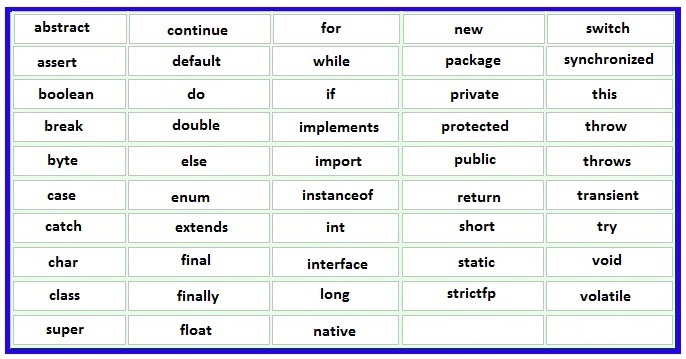

Keywords In Java:-
⇒ Definition :- Keywords are the predefined words having any specific meaning. These keywords cannot be used as a variable name or class name or interface name or method name or object name.
⇒ Below is the list of all keywords in java :-
Below is the diagram of different literals in java :-

Note : true, false and null are values so they are not keywords but they also cannot be used as a variable name or class name or interface name or method name or object name.
⇒ Below is the explanation of each keyword in java (detailed explanation will be provided in further tutorials)
1. abstract :- The abstract keyword is used to achieve abstraction in Java. "abstract" keyword is used with class and methods (not with variables). If we declare class as abstract then the method will have only declaration part, not definition part (i.e. method will not have body). If we use abstract class then the class can contain abstract method as well as concrete methods. Interfaces are also by default abstract which further contains abstract methods, but we don't need to use abstract keyword as they are by default abstract.
2. assert :- It is used to define an assert statement. An assert statement is used to declare an expected boolean condition in a program. If the program is running with assertions enabled, then the condition is checked at runtime. If the condition is false, the Java runtime system throws an "AssertionError".
Syntax : assert expression1 [: expression2];
3. boolean :- boolean is a primitive data type which can contain only true or false value.
4. break :- break is a "Jump Statement" used to break loop or switch statement. It breaks the current flow of the program at some particular given condition.
5. byte :- byte is a primitive data type used to declare a variable that can hold an 8-bit data values.
6. case :- case is used with switch statements in java which is followed by the value to be compared to and a colon.
7. catch :- catch is a keyword which is always used with try block. It is used to handle the exception object or say to provide an alternative way if an exception occurs in try block.
8. char :- char is a primitive data type used to declare a variable that can hold unsigned 16-bit Unicode characters.
9. class :- class is a keyword is used to declare a class followed by predefined or user defined class name.
10. continue :- continue is a keyword used to continue the loop. It continues the loop and terminates the rest of the processing of the code within the loop for the current iteration.
11. default :- default keyword is used to declare default values in a Java annotation. From Java 8 onwards, the default keyword can be used to allow an interface to provide an implementation of a method.
12. do :- The do keyword is used together with while to create a do-while loop (do-while is an iterating or looping statement). In do block, the code will execute at least one time, then it will go in while to check the condition, if condition is true, it again goes in do block else goes outside do-while block.
13. double :- double is a primitive data type used to declare a variable that can hold a 64-bit floating-point numbers.
14. else :- else keyword is used with if block to create if-else selection or conditional statements. else block will execute if the given if condition is false.
15. enum :- enum is a special data type that enables for a variable to be a set of predefined constants in java. According to Java naming conventions, it is recommended that we name constant with all capital letters.
First line inside enum should be list of constants and then other things like methods, variables and constructor(enum constructors are always private or default).
16. extends :- extends keyword is used to achieve inheritance in java. If we write class B extends A, it means A class properties are inherited in class B.
17. final :- final keyword can be used with variable, class or method.
If we create final variable, the value becomes constant.
If we create final class, then the class cannot inherit.
If we create final method, then the method cannot override.
18. finally :- finally keyword can be used with either try-catch block or just try block. finally block is always executed whether there is exception or not.
19. float :- float is a primitive data type used to declare a variable that can hold a 32-bit floating-point number.
20. for :- for keyword is used to create for looping or iterating statement. It is used to execute the statements repeatedly till the provided condition is true. If the number of iteration is fixed, it is recommended to use for loop.
21. if :- if keyword is used to create selection or conditional statement. The if block is executed when the condition given in if block is true.
22. implements :- implements keyword is used to achieve an inheritance in case of interface.
23. import :- import keyword makes classes and interfaces available and accessible to the current java file or class.
24. instanceof :- instanceof keyword is used to check whether the object is an instance of the specified class or implements an interface. If yes it returns true else false.
25. int :- int is a primitive data type used to declare a variable that can hold a 32-bit signed integer.
26. interface :- interface keyword is used to declare an interface. Interfaces are similar to abstract class but having all the methods of abstract type.
27. long :- long is a primitive data type used to declare a variable that can hold a 64-bit integer.
28. native :- native keyword is used with method to indicates that the method is implemented in native code using JNI (Java Native Interface).
29. new :- new keyword is used to create an instance of the class by allocating memory for a new object and returning a reference to that memory.
30. package :- package keyword is used to declare a Java package which contain similar types of classes or interfaces or packages.
31. private :- private keyword is an access modifier which is used to indicate that the method or variable can only be accessed within the class.
32. protected :- protected keyword is an access modifier which is used to indicate the method or variable can be accessed within package and outside the package (outside the package only when inheritance concept used).
33. public :- public keyword is an access modifier which is used to indicate that the method or variable is accessible anywhere i.e. within same package or different package. It has the highest accessibility.
34. return :- return keyword is used to return any value(value may be string, integer, class ref, object ref or anything) from a method when its execution is complete.
35. short :- short is a primitive data type used to declare a variable that can hold a 16-bit integer.
36. static :- static keyword can be used with variable, method, inner class or it can be block. The main use of this keyword is memory management. (this topic is deeply explained in OOP's static keyword topic)
37. strictfp :- strictfp keyword is used for restricting floating-point calculations and ensuring same result on every platform while performing operations in the floating-point variable.
38. super :- super keyword is used to refer the parent class instance variable, method or constructor. Remember that super should be the first statement in the constructor.
39. switch :- switch keyword creates conditional or selection statement that executes code based on test cases. If any case matches it executes the statements else it will execute the default statement.
40. synchronized :- synchronized keyword can be used with method or block. It allows only one thread to use the resource at one time, means multiple threads cannot share the same resource at same time.
41. this :- this keyword is used to refer current class instance variable, method or constructor. It can also used to passed as an argument in the method or constructor call.
42. throw :- throw keyword is used in exception handling. It is used to create an exception object explicitly. throw keyword is mainly used for custom exceptions. It is followed by new instance.
43. throws :- throws keyword is used in exception handling. It is used to declare the exception and thus indicate the caller method that particular block throws checked exception and thus we have to handle it.
44. transient :- transient keyword is used in serialization. If you define any class attributes or variables as transient, it will not be serialized.
45. try :- try keyword is used in exception handling which contains risky code. The try block must be followed by either catch or finally block.
46. void :- void is the return type which indicates that the method does not return anything. Remember, void means nothing, neither 0 nor null.
47. volatile :- Volatile keyword is used to modify the value of a variable by different threads. It is also used to make classes thread safe. It means that multiple threads can use a method and instance of the classes at the same time without any problem.
48. while :- while keyword is looping or iterating statement. It is always recommended to use while loop if the number of iteration is not fixed.
⇒ Below is my youtube video link explaining "keywords In Java" :-
Click Here To See "keywords In Java"